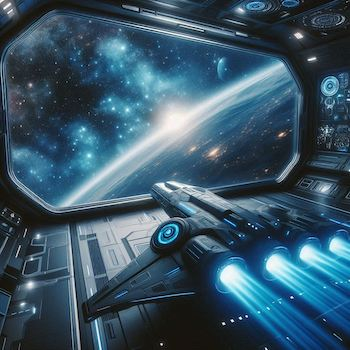
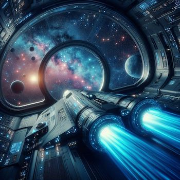
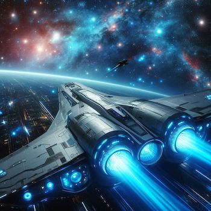
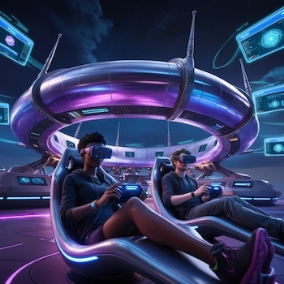
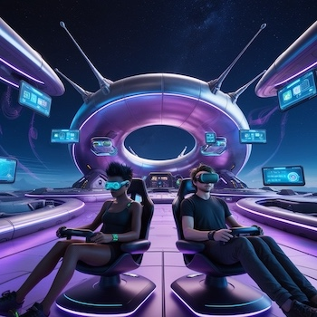
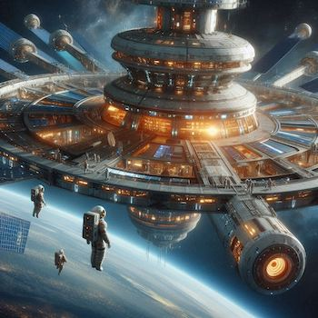

Uzay Keşifleri
Space Station Pin up'ta, bilinmeyen galaksileri keşfederken yeni gezegenler ve kaynaklar bulacaksınız. Her yeni gezegen, sizi hem yeni fırsatlar hem de tehlikelerle karşılaştıracak.
Uzayın derinliklerinde, bilinmeyen galaksilerin ötesinde bir istasyon var: "Space Station Pin up". Bu istasyon, sadece cesur ve kararlı olanların hayatta kalabildiği, tehlikelerle dolu bir evrenin kalbinde yer alıyor. İstasyonun amacı, insanlığın hayatta kalmasını sağlamak ve yeni keşifler yapmak. Ancak, bu evren göründüğünden çok daha tehlikeli.
İstasyonun başında, en cesur pilotlardan biri olan sen varsın. Görevin, bu bilinmeyen evreni keşfetmek, kaynaklar toplamak ve Pin up destekli stratejik kararlar alarak hayatta kalmayı başarmak. Her adımında yeni tehditler, gizemli yaratıklar ve çözülememiş sırlarla karşılaşacaksın.
Space Station Pin up, Pin up markasının stratejik desteğiyle geliştirilen bu oyun, sizi uzayın derinliklerine sürükleyerek strateji ve hız gerektiren görevlerle dolu bir maceraya çağırıyor. Her yeni keşif, yeni bir gizemi ve yeni bir tehdidi beraberinde getiriyor. Uzayda hayatta kalmak, Pin up'ın sağlayacağı desteklerle mümkün olacak.
İstasyonun çevresinde beliren tehlikeler, sadece fiziksel tehditlerden ibaret değil. Bir yandan kaynak toplamak, diğer yandan istasyonu saldırılardan korumak zorundasınız. Pin up stratejileri sayesinde düşmanlarınızı yenebilir ve istasyonunuzu güçlendirebilirsiniz.
Space Station Pin up evreninde her karar hayatta kalmanız için büyük önem taşıyor. Yanlış bir adım, tüm ekibinizin hayatına mal olabilir. Pin up'ın sunduğu ileri teknoloji ve stratejik avantajlarla, bu bilinmeyen evrende yeni bir düzen kurabilirsiniz. Ancak, unutmayın ki bu evrende her şey bir anda tersine dönebilir.
Pin up destekli bu macera, sizi uzayın en karanlık köşelerine götürecek ve her yeni gezegen, her yeni galaksi, keşfedilmemiş sırlarla dolu olacak. Hayatta kalmanın anahtarı ise her zaman tetikte olmak ve Pin up'ın sunduğu imkanları en iyi şekilde kullanmak olacak.
Space Station Pin up'ta, bilinmeyen galaksileri keşfederken yeni gezegenler ve kaynaklar bulacaksınız. Her yeni gezegen, sizi hem yeni fırsatlar hem de tehlikelerle karşılaştıracak.
Oyun boyunca, Pin up destekli stratejik kararlar alarak istasyonunuzu güçlendirecek ve uzayın derinliklerinde hayatta kalmayı başaracaksınız.
Düşman uzaylılar ve diğer tehditlerle başa çıkmak için Pin up stratejilerini kullanarak büyük savaşlar vereceksiniz. Her zafer, sizi bir adım daha öne taşıyacak.